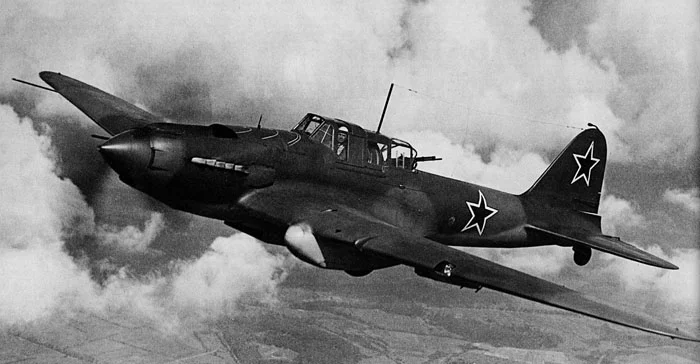
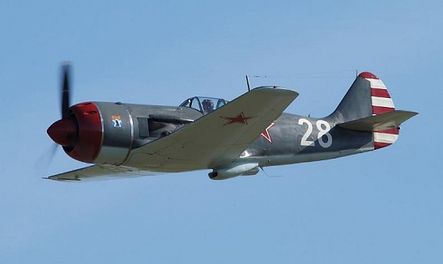
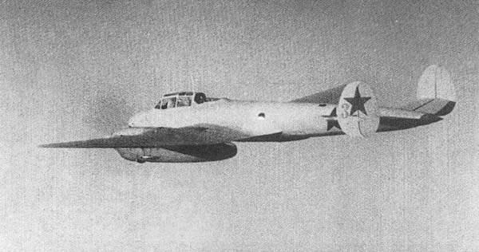

Лучшие самолёты 2-й мировой войны
СССР:
ЯК-9

Як-9 — советский одномоторный самолёт истребитель-бомбардировщик Великой Отечественной войны. Был разработан под управлением Александра Сергеевича Яковлева. Являлся самым массовым советским истребителем Великой Отечественной войны. Производился с октября 1942 по декабрь 1948 года, всего было построено 16 769 самолётов.
Як-9 явился закономерным продолжением истребителей Як-1 и Як-7. С конструктивной точки зрения он представлял собой дальнейшее развитие Як-7. Мало отличаясь от него по внешнему виду, Як-9 в то же время был во всех отношениях более совершенным. Использование металла позволило, в частности, существенно уменьшить массу конструкции, а выигрыш использовать либо для увеличения запаса горючего, либо для оснащения самолёта более мощным вооружением и более разнообразным спецоборудованием.Як-9 был самым массовым истребителем советских ВВС периода Великой Отечественной войны. В середине 1944 г. самолётов Як-9, Як-9Т и Як-9Д в сумме было больше всех других находившихся на вооружении истребителей, вместе взятых, и они в большой мере заменили Як-1 и Як-7Б на основных фронтах. Выпуск Як-9 на заводе N153 достигал 20 самолётов в день.
ИЛ-2
Ил-2 — советский штурмовик времён Второй мировой войны, созданный в ОКБ-240 под руководством Сергея Владимировича Ильюшина. Самый массовый боевой самолёт в истории авиации, было выпущено более 36 тысяч штук. Конструкторы называли разработанный ими самолёт «летающим танком». Пилоты-истребители люфтваффе прозвали Ил-2 «бетонным самолётом». По утверждению некоторых советских авторов, солдаты вермахта называли его «чумой». Ил-2 принимал участие в боях на всех театрах военных действий Великой Отечественной войны, а также в Советско-японской войне. В феврале 1941 года началось серийное производство (приказ А. И. Шахурина № 739 от 14.12.1940).Первые серийные Ил-2 изготовлены в феврале 1941 года в Воронеже на заводе № 18 (в ноябре 1941 года завод эвакуирован в Куйбышев). Ил-2 серийно производился также на авиационных заводах № 1 и № 18 в Куйбышеве, на авиационном заводе № 30 в Москве. Из общего количества Ил-2 (36 183 шт.) 74 % произведено в Куйбышеве - 26 888 шт. Некоторое время в течение 1941—1942 годов самолёт выпускался заводом № 381 в Ленинграде и Нижнем Тагиле.
ЛА-5
Ла-5 — советский одномоторный истребитель, созданный ОКБ-21 под руководством С. А. Лавочкина в 1942 году в Горьком. Самолёт представлял собой одноместный моноплан цельнодеревянной конструкции с убирающимся шасси и закрытой кабиной. Первоначальное название — ЛаГГ-5.Первые серийные самолёты стали сходить с конвейера в июле 1942 года. Первоначально ЛаГГ-5 имел на вооружении две автоматические 20-мм пушки ШВАК, которые размещались в передней части фюзеляжа над двигателем. Приборное оснащение было очень скудное. На самолёте даже не имелось ни одного гироскопического прибора, как например авиагоризонта или гирокомпаса. Если сравнивать ЛаГГ-5 с аналогичными самолётами Германии, Великобритании или США, то может показаться, что технически он значительно уступал им. Однако по своим лётным качествам он вполне соответствовал требованиям времени. Кроме того, его простая конструкция, отсутствие необходимости в сложном техобслуживании и нетребовательность к взлётным полям делали его идеальным для тех условий, в которых приходилось действовать частям советских ВВС. В течение 1942 года было изготовлено 1129 истребителей ЛаГГ-5.Приказом НКАП № 683 от 8 сентября 1942 года истребители ЛаГГ-5 были переименованы в Ла-5.
Пе-3
Пе-3 — советский двухмоторный тяжёлый истребитель цельнометаллической конструкции. Разработан в ОКБ-29 на основе опытного двухмоторного высотного истребителя «100» под руководством В. М. Петлякова. Первый полёт совершил в августе 1941 года. От бомбардировщика Пе-2 (созданного на базе того же «100»-го) внешне отличался отсутствием нижней люковой стрелковой установки и тормозных решёток. В инициативном порядке завод № 22 построил истребитель Пе-2И. Экипаж также уменьшили до пилота и штурмана, установив в кабине стрелка бак на 340 литров. Ещё два подвесных бака по 180 литров вешались на наружные замки. В бомбоотсеке смонтировали агрегат, за основу конструкции были взяты крыльевые стрелковые установки самолёта Ил-2 — две пушки ШВАК монтировались внизу, а сверху в бомбоотсеке находились патронные ящики. Как и на Пе-3, были демонтированы автомат пикирования, тормозные решётки, электробомбосбрасыватель, радиополукомпас, ночной бомбовый прицел НКПБ-4; радиостанцию заменили маломощной. Но после завершения госиспытаний Пе-2И в серии решили не строить. 29 августа 1941 года на Центральном аэродроме начались испытания первого серийного Пе-3. С конца августа машины стали поступать на перевооружение 95 БАП.